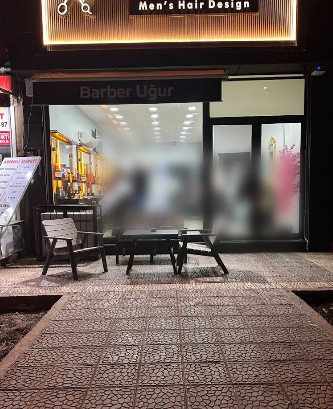
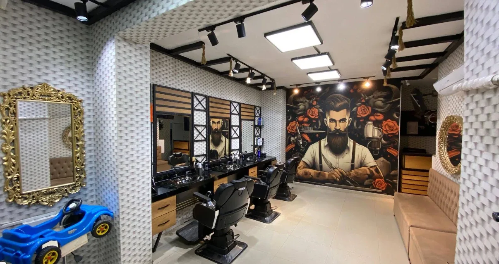
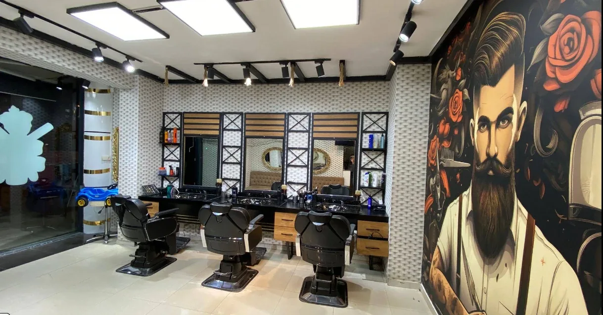
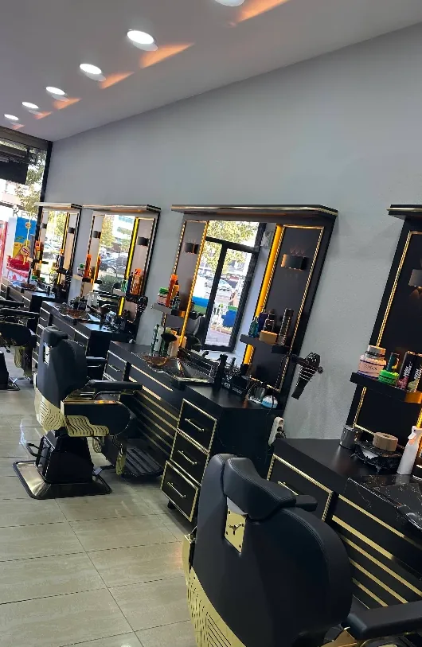

Barber Uğur
Berber · Mücahitler, Şehitkamil · Gaziantep
Gazi Muhtar Paşa Bulvarı'nda, akşamları ışıklı tabelasıyla uzaktan seçilen dükkân. Boş saatinizi buradan seçin; geldiğinizde koltuk hazır olsun.
Google'da 4,9 · 70 değerlendirme
- Kapanış
- 20:00
- Adres
- Gazi Muhtar Paşa Blv. No:46/E
- Telefon
- 0542 825 33 89
- Giriş
- Tekerlekli sandalyeye uygun
Hizmetler
İçeride ışıklı aynalı koltuklar ve çocuklar için oyuncak araba şeklinde bir tıraş koltuğu var. Modelinizi randevu alırken not olarak yazabilirsiniz.
Fiyatlar oda tarifesine göre dönem dönem değişiyor. Güncel fiyatı WhatsApp'tan sorun. Listede olmayan bir hizmet için de önce yazın.
-
Saç kesimi
Randevu alİstediğiniz modeli not alanına yazın ya da fotoğrafını WhatsApp'tan gönderin.
-
Sakal tıraşı
Randevu alSakalın hattını, boyunu ve şeklini düzeltme.
-
Saç & sakal
Randevu alİkisi bir arada, tek randevuda.
-
Çocuk tıraşı
Randevu alKüçükler oyuncak araba koltuğunda oturuyor.
-
Yüz maskesi
SorunTıraşın ardından yapılıyor; istiyorsanız randevu notuna yazın.
İçeride
Duvarı kaplayan güllü berber resmi, ışıklı aynalar, siyah koltuklar. Bekleyenler için koltuk, küçükler için oyuncak araba var.



Randevu
Hizmeti ve günü seçin, o günün boş saatleri listelensin. Seçtiğiniz saat size ayrılır ve ekranda bir randevu kodu görürsünüz.
Randevu ücretsizdir, ön ödeme yoktur. Gelemeyecekseniz kodunuzla haber verin; o saati başkasına açalım.
Telefonla: 0542 825 33 89
Randevunuz alındı
- Hizmet
- Gün
- Saat
- Kod
Değişiklik ya da iptal için bu kodla WhatsApp'tan yazın veya arayın.
Randevu telefonunuzun takvimine kaydolur ve 2 saat önce hatırlatır. Ayrıca randevudan önce dükkândan WhatsApp hatırlatması gelir.
Sorular
Randevusuz gelebilir miyim?
Gelebilirsiniz; koltuk boşsa hemen, değilse kısa bir beklemeyle alırız. Beklemek istemiyorsanız randevu alın ya da arayın.
Fiyatlar ne kadar?
Fiyatlar hizmete göre değişir ve dönem dönem güncellenir. Güncel fiyatı WhatsApp'tan ya da telefonla sorabilirsiniz.
Çalışma saatleriniz nedir?
Akşam 20:00'de kapatıyoruz. Açılış saati ve tatil günü için gelmeden önce arayın.
Çocuğumu getirebilir miyim?
Getirebilirsiniz. Çocuklar için oyuncak araba şeklinde bir tıraş koltuğumuz var. Randevu formunda "Çocuk tıraşı"nı seçin.
Tekerlekli sandalyeyle girebilir miyim?
Google Haritalar'da girişimiz tekerlekli sandalyeyle erişilebilir olarak işaretli. Özel bir ihtiyacınız varsa randevu notuna yazın.
İstediğim modeli nasıl anlatırım?
Randevu formundaki not alanına yazın ya da beğendiğiniz kesimin fotoğrafını WhatsApp'tan gönderin.
Randevumu bana hatırlatır mısınız?
Evet. Online randevu aldığınızda ekrandaki "Telefonuma ekle" ile randevu takviminize kaydolur ve 2 saat önce hatırlatır. Ayrıca randevudan önce dükkândan WhatsApp hatırlatması gelir.
Randevumu nasıl değiştirir veya iptal ederim?
Randevu kodunuzla WhatsApp'tan yazın ya da arayın. Gelemeyecekseniz haber vermeniz, o saati başka birine açmamızı sağlar.
Dükkân tam olarak nerede?
Mücahitler Mahallesi, Gazi Muhtar Paşa Bulvarı, Gazi Apartmanı No:46/E, Şehitkamil/Gaziantep. Üstte ışıklı "Men's Hair Design" tabelası, altında "Barber Uğur" yazan siyah tente var. Haritada "39G8+4J" koduyla da bulabilirsiniz.
Adres
Mücahitler Mah., Gazi Muhtar Paşa Blv.Gazi Apartmanı No:46/E
27090 Şehitkamil / Gaziantep
Üstte ışıklı "Men's Hair Design" tabelası, altında siyah tente. Kapının önünde ahşap bir oturma grubu var.
- Telefon ve WhatsApp
- 0542 825 33 89
- Kapanış
- 20:00 (açılış ve tatil günü için arayın)
- Harita kodu
- 39G8+4J Şehitkamil
- Giriş
- Tekerlekli sandalyeye uygun (Google Haritalar bilgisi)
Harita Google'dan yüklenir. Siz tıklamadan Google'a bilgi gitmez.